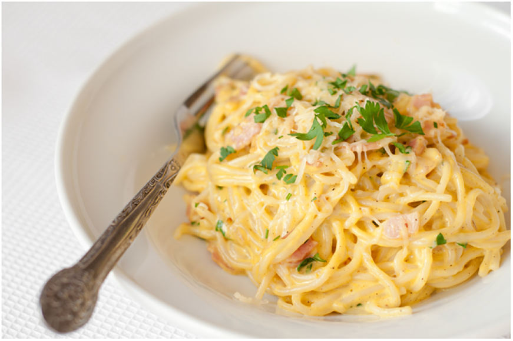

Spagečiai

Ingredientai
- 50 g spagečių
- 2 žiupsneliai druskos
- 4 vnt. kiaušinio trynių
- 250 ml riebios grietinėlės
- 100 g tarkuoto kietojo sūrio
- 1 sauja puodelio šviežių petražolių
- 100 g karštai rūkytos šoninės
- 1 vnt. svogūnų
- 3 skiltelės česnakų
- 1 arbat. š. maltų pipirų
- 1 arbat. š. malto Muskato
Kaip gaminti
- Į prikaistuvį įpilkite vandens, pagardinkite druska. Užvirinkite ir išvirkite makaronus pagal instrukcijas ant pakuotės. Nepervirkite.
- Kol makaronai verda, dubenyje sumaišykite kiaušinių trynius, grietinėlę, tarkuotą kietąjį sūrį ir kapotas petražoles.
- Į didelę keptuvę sudėkite gabalėliais pjaustytą šoninę, suberkite smulkiais kubeliais supjaustytus svogūnus ir česnakus. Kepinkite ant vidutinio dydžio ugnies apie 5 minutes, kol svogūnai ir česnakai suminkštės, o šoninės gabalėliai taps traškūs.
- Į keptuvę sudėkite išvirtus makaronus.
- Nuimkite keptuvę nuo ugnies ir supilkite kiaušinių, grietinėlės ir sūrio plakinį. Išmaišykite. Karščio nuo svogūnų, šoninės ir makaronų užteks, kad kiaušiniai išvirtų, tačiau nesušoktų į gabaliukus.
- Pagardinkite maltais pipirais, muskatu ir druska. Maišykite makaronus, kol jie visi pasidengs padažu.
- Paskirstykite makaronus į lėkštes. Apibarstykite dar žiupsniu tarkuoto kietojo sūrio ir petražolėmis.
- Skanaus!
Simonas Patamsa 2C, 2020